Problem Definition
I am trying to create an AI to play and beat 4x4x4 Tic-Tac-Toe. The AI will be implemented mainly with Minimax and alpha-beta pruning. For the Minimax, I will implement a heuristic function to evaluate the node value. We want to increase the look-ahead depth of our Minimax algorithm, but at the same time keep our run time under time limit.
Method and Implementation
I implemented the AI with Minimax algorithm with look-ahead depth of 3. In Minimax, Max represents the AI player and Min represents
the opponent player. We will start the Minimax search with Max(AI player) on the node and recursively calling Minimax function on the children nodes
with alternating Max and Min. Each node in the Minimax tree will be a certain board state and its children nodes will be all the board states after making the
next move. Basically in Minimax, we are simulating the gameplays and trying to find the optimal move by assuming that the opponent will
also make the optimal move. I have look-ahead depth of 3, which means I will only look at all the possible board states after 3 moves. During Minimax
search, we will stop and return the node value(explained later) when we reach a terminal node or when we reach the leaf node at our look-ahead depth. A terminal
node is a board state that has either a winner or a draw.
Node value for teminal node: If Max(AI) wins, we will return 100000+depth, if Min(opponent) wins, we will return -100000-depth, and if draw, we will return 0. The
reason for adding and subtracting the depth value in the terminal node value is for cases when there are more than one winning moves and we want the faster winning move.
The node value of the leaf node is computed with a heuristic function, which is the main part of how well the AI performs. In the heuristic function,
I look at all the winning lines that are marked by only one player and assign that line a value based on how many marks are in that line. The line value is assigned
based on the number of marks.
Max's line value: 4^(number of marks)
Min's line value: 4^(number of marks)
These line values are summed up and returned as the node value, below is the code of the heuristic function:
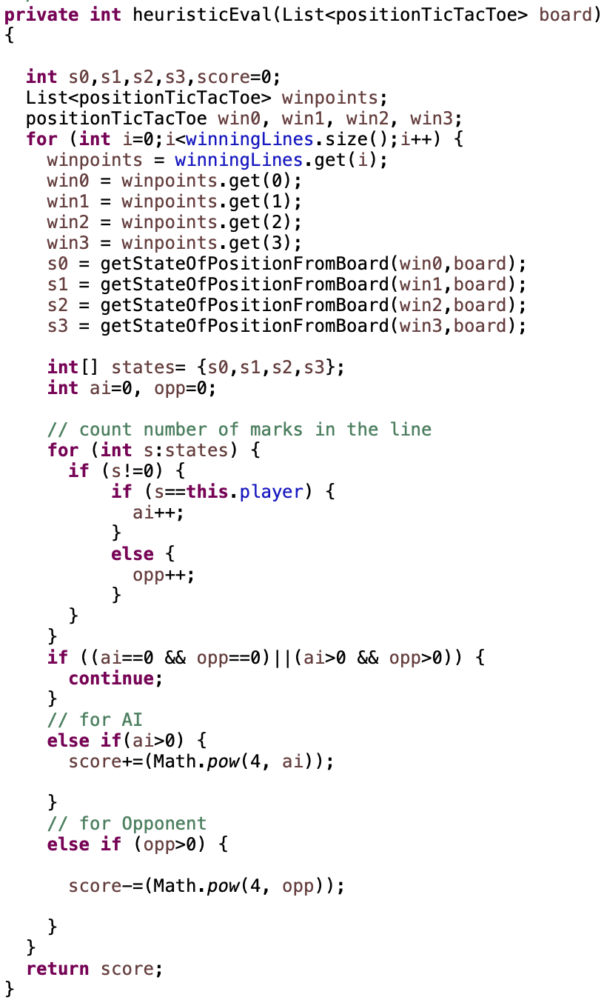
Now I will explain the optimization techniques I used for the AI and the Minimax algorithm.
Alpha-beta pruning: It is used to prune useless children branches in the Minimax tree by
keeping track of the Max's lower bound with alpha and Min's upper bound with beta. If alpha is larger than beta, then we will stop the search for rest of the children branches,
since we know that those children will not affect the final result.
Random First Move: When the game starts and the AI is the first to play, we don't have to go through the minimax algorithm to find the best first move. We
instead stored all the best first move in a data structure and simply pick a random one to start with. This will reduce a lot of time for the first move.
Rule based function: This function is to prevent using Minimax for obvious decisions. If we can win in this move, then take the move. If we cannot win this move and
the opponent can win in the next move, then we block them. These two rules are simple to implement and save lots of time. In the function, I looked at all 76 winning lines and
return the winning move if I have any three in a rows. If I encountered opponent's three in a row, I will first keep track of the blocking move and block it only if
I don't have any winning move at all.
The code of Minimax and the optimization techniques will be shown below:
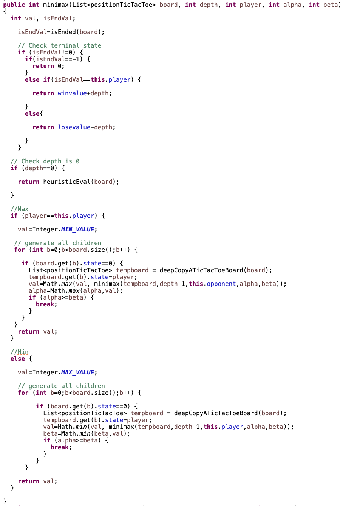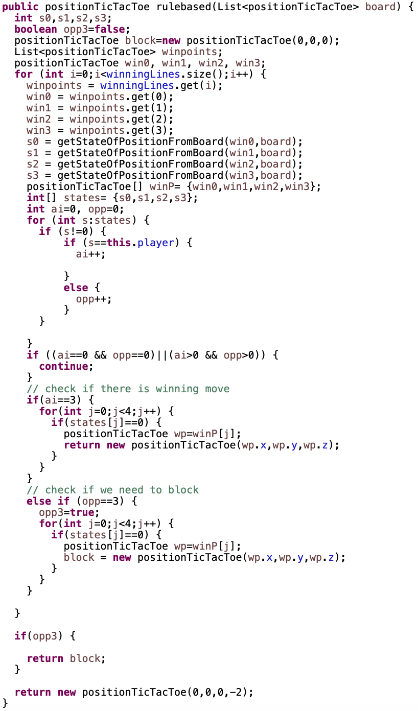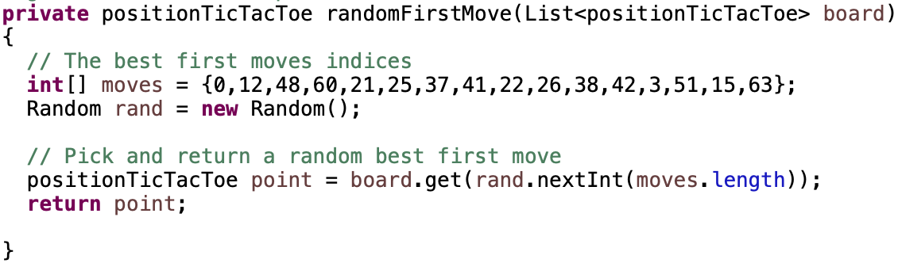
Experiments & Results
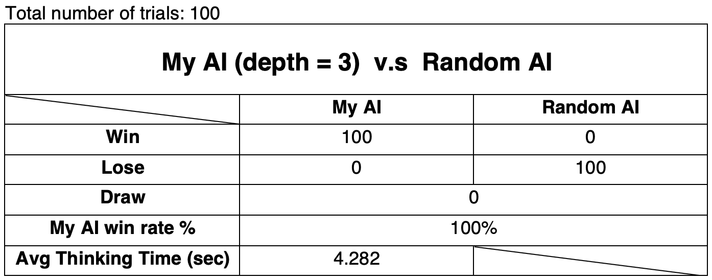
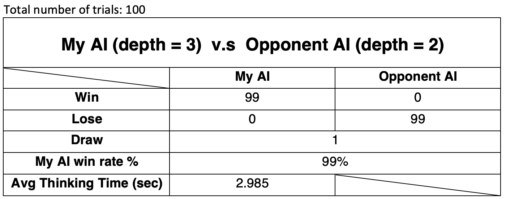
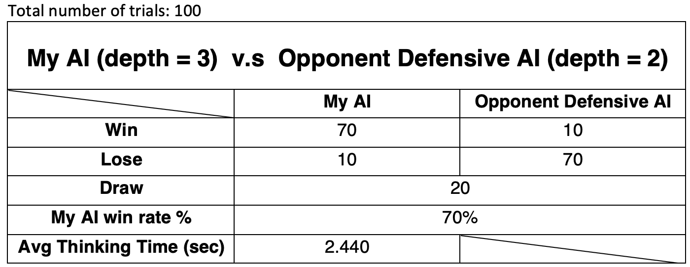
Discussion
My AI has look-ahead depth of 3 and a heuristic function that balances attack and defence. The core of my heuristic function is the assignment of line values, and
by weighing Max's and Min's lines equally, the AI balances agressiveness and defense when needed. Aggressive AI will build its lines before blocking whereas defensive AI
will block before building. I have tried other types of heuristic, such as the aggressive type
heuristic, defensive type heuristic, and heuristic that switches betwwen aggressive and defending base on the situation of the board. I end up with the balancing type, because
it wins the most among all the types I have tried.
After playing 100 games for each experiments, my AI dominates in both the random AI and the AI with look-ahead depth 2. I will now
analyze the interesting strategy my AI used to beat the opponent AI with look-ahead depth 2. Below are the 6 consecutive turns from image left to right between the
two AIs, where my AI is player 1 and opponent AI is player 2. My AI was able to set up a number of consecutive force moves(when opponent has no choice but to block)
and at the same time set up a fork to win the game. In image 1, 3, and 5 when its player 2's turn, it is forced to block player 1's three in a row, but player 1 is able
to create a new three in a row right after player 2's previous block and eventually set up a fork to win the game. Player 1 is able to do this because it is able to look ahead 3 steps.
However, player 2 can only look ahead 2 steps, so it is not able to foresee this potential fork. In general, my AI dominates the look-ahead 2 because my AI is always one step ahead in
terms of planning and generating the optimal move:
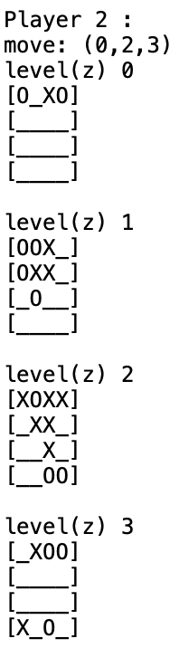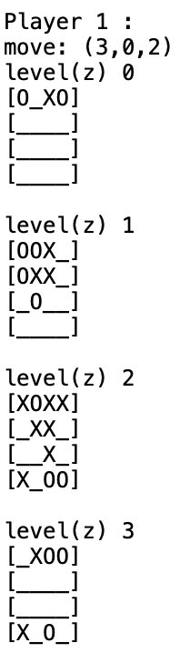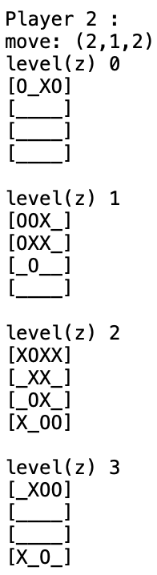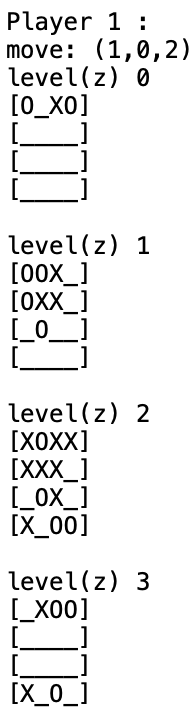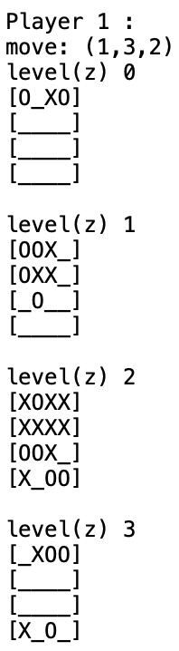
Now I will analyze the third experiment which is my AI against a defensive look-ahead depth 2 AI. In a defensive AI, the heuristic function will weigh opponent's lines more than
its own lines. The exact formula for assigning Min's line value in defensive AI is : (number of marks)*(4^(number of marks)). This will encourage the defensive AI to block before building its own lines.
In this experiment, my AI still wins 70% of the times, but did not completely dominates the opponent AI, because it is harder to set up forks, since the oppoenent AI will block as soon as possible.
This gives the defensive AI more room to create draws. In a 4x4x4 board, it is a lot harder to create draws since they are so many winning lines. Below I show one of the end results of a draw game between
my AI and the defensive look-ahead depth 2 AI:
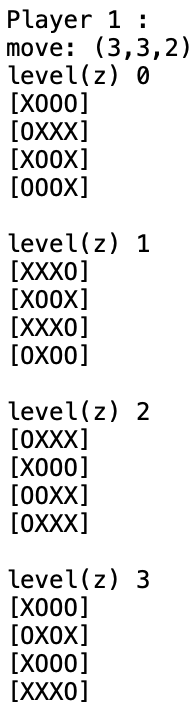
- What are the strengths and weaknesses of your method?
- Potential future work. How could your method be improved? What would you try (if you had more time) to overcome the failures/limitations of your work?
The main strength of my AI is the heuristic function, because I spent quite some time experimenting and figuring out the better implementation. I also include several methods to optimize my AI.
Alpha-beta pruning optimizes my Minimax algorithm by pruning branches. Random first move method prevents unnecessary Minimax search for the first move. Rule based function prevents unnecessary Minimax search for obvious
moves. However, my AI still have weaknesses such as its thinking time. My AI has to think and come up with the move in close to 5 seconds and the thinking times are not consistent. The deeper the
look-ahead, the better, since it gives the AI more information to find the optimal move, but as the look-ahead depth increases, the Minimax tree branches increase exponentially. This increases the thinking time significantly.
There are many optimization techniques for Minimax to increase the look-ahead depth while keeping the thinking time under time limit. Another weakness is also my strength which is my heuristic function. My heuristic function is
doing pretty well, but it is not unbeatable, because it is not able to detect and counter potential forks all the time. When I play my AI against my AI, they will lose to each other half of the time due to forks.
I think this problem can be solved if we can increase the look-ahead depth and implement a even better heuristic or add more features so the worse case for my AI will be a draw. For alpha-beta pruning, it prunes children
branches to increase run time, but the pruning has a lot to do with the order of children nodes. I can re-order the children nodes to optimize alpha-beta pruning.
I think I will spend even more time on my heuristic function and on optimizing my Minimiax, so I can completely counter forks and increase my look-ahead depth. I think if I have more time I would want to use progressive deepening to increase the depth, heuristic pruning to prune more branches. I also think that by figuring out all 24 symmetry of a cube, we can reduce a lot of Minimax branches because I realized that there are many board states that are acutally symmetrical when we are generating the children nodes. The board states can be stored in a transposition table for symmetry check.
Conclusions
In this assignment, I implemented a game AI mainly with Minimax and alpha-beta pruning. The implementation of Minimax and alpha-beta pruning are straight forward. However, the more complicated part of the assignment is to figure out the best heuristic function and optimization techniques. I played my AI against my AI many times so I can improve my AI step by step. This assignment gives us lots of insight into different game AI algorithms and optimization techniques especially Minimax and alpha-beta pruning.
Credits and Bibliography
https://www.google.com/url?q=https://en.wikipedia.org/wiki/Minimax&sa=D&ust=1555617807637000 https://en.wikipedia.org/wiki/Alpha%E2%80%93beta_pruning